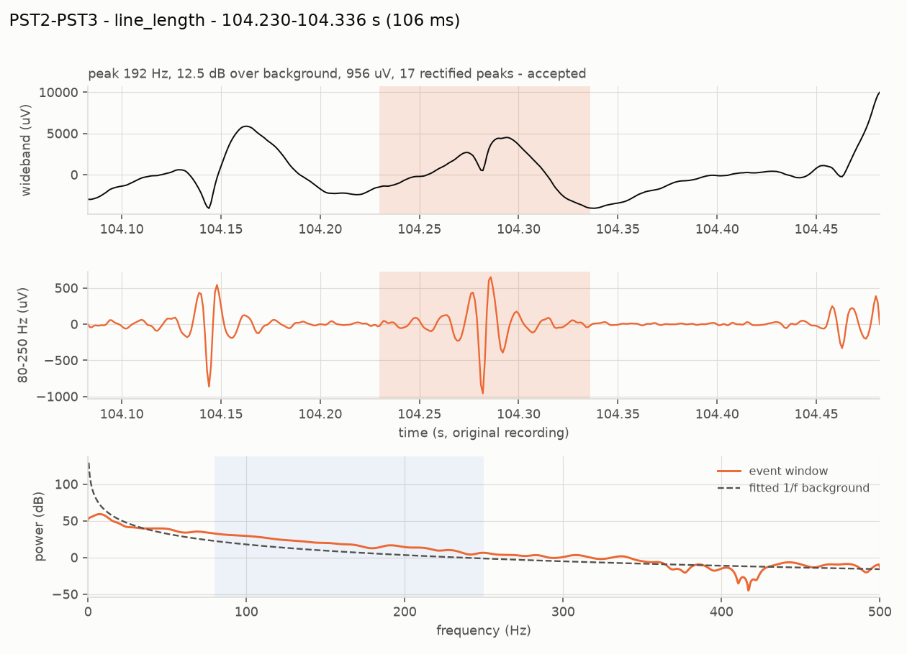

Onset-HFO · Brain–Machine Interface Lab, Nazarbayev University
A surgeon can cure drug-resistant epilepsy by removing the tissue that generates the seizures — but only if someone can point at it. This is a tutorial on trying to point at it with a machine, on public intracranial EEG, and on how much of the answer survives contact with a new patient.
There is a companion to this document. It asks the opposite question: where this one works through whether the results are true — what the archive does and does not contain, why a filtered sharp edge looks like a ripple, and five attacks on the result with the one that landed — the implementation walkthrough on the Onset project site works through how the system is built: iEEG, features, models, evaluation without leakage, and an optional agent lab. Same subject, opposite questions; neither is a longer version of the other.
Part 1 — The problem
About a third of people with focal epilepsy do not respond to medication. For some of them surgery works: remove the tissue where seizures begin — the seizure onset zone — and the seizures stop.
Finding that tissue is the hard part. Electrodes are implanted directly into the brain and intracranial EEG (iEEG) is recorded for days, across 60 to 130 contacts. An epileptologist reviews it and marks where seizures appear to start. Surgery removes that region. Then, a year or two later, the patient either is seizure-free or is not.
That last step is the only honest ground truth anyone has — and it arrives after the decision it was supposed to inform.
So the research question is narrower than "can a machine find the seizure onset zone". It is:
Given days of iEEG and no answer key, can a machine rank the contacts so that the ones a clinician would name rise to the top — and can it say how sure it is?
Review is slow and expert-limited, and expertise is the scarcest input in epilepsy surgery worldwide. A ranking that is even roughly right narrows days of review to hours. A ranking that is confidently wrong is worse than nothing, which is why most of this tutorial is about measuring uncertainty rather than chasing accuracy.
Part 2 — The signal
Two markers in the recording are candidates. Both are visible in the raw signal and both are countable.
High-frequency oscillations (HFOs), specifically ripples: brief bursts of 80–250 Hz activity lasting a few tens of milliseconds. Tissue that generates seizures tends to generate more of them. Interictal epileptiform discharges — spikes — are the sharp transients that show up between seizures and are what a clinician has always read.
Counting either by eye across 100 channels and several hours is not possible, so detection is automated. The detectors here are classical and deliberately transparent: band-pass the signal, slide a short window, measure energy (Staba et al., 2002) or line length (Gardner et al., 2007), threshold at a few robust standard deviations of that channel's own baseline, and require enough oscillation cycles that a single transient cannot pass.

Nothing here is a black box. Each step can be drawn on a whiteboard and argued with, and each threshold is one number in one file. That matters more than it sounds: a clinician who cannot interrogate why a channel was ranked first will not act on the ranking.
Part 3 — The trap
Here is the failure that makes naive HFO detection useless, and it is worth understanding before any of the results.
Filter a sharp transient — an electrode pop, a movement artifact, even a genuine epileptic spike — through an 80–250 Hz band-pass, and it rings. The ringing is a burst of 80–250 Hz energy lasting a few tens of milliseconds. It is not an oscillation in the brain; it is an artifact of the filter. To an energy detector it is indistinguishable from a ripple, and the energy is really there, so the detector is not even malfunctioning.
The fix is to check each candidate against the recording's own background spectrum. A real ripple has a spectral peak of its own; ringing does not. Measured on simulated data where every implanted event is known:
The spike detector had the same disease in mirror image. After a 5–60 Hz band-pass an electrode pop looks like a textbook sharp wave; in the raw samples it is a step. Measuring the largest sample-to-sample jump in the unfiltered signal separates them cleanly — genuine discharges score 3–5 on that feature, artifact steps 25–64.
Most of the difference between a detector that works and one that does not is artifact rejection, not the detector. Published HFO rates that omit this step are counting filter ringing, and the error is large: precision 0.63 against 0.97 on the same data with the same detector.
The generalisable lesson: when a filter hides the evidence, test on the raw samples.
Part 4 — The data
Everything here runs on OpenNeuro ds003029 — intracranial recordings from four clinical centres, CC0-licensed, no data-use agreement. It was chosen because it is genuinely public, it is intracranial (scalp EEG cannot show ripples), and its files can be read in byte ranges over plain HTTPS, so a notebook downloads 24 MB instead of 100.
It also, it turns out, ships the labels. Buried in sourcedata/ is a spreadsheet with the clinician-defined onset contacts for 100 patients, alongside Engel outcome scores and the recording centre. That single 30 KB file is what makes any of the scoring below possible.
Four UMMC recordings sample at 250 Hz. Nyquist is 125 Hz, so an 80–250 Hz ripple is not measurable there at all — no amount of method fixes it. Four UMF signal files are shorter than their own marked seizure time. One more samples at 500 Hz, where the band reaches the anti-alias edge.
The practical consequence: "leave-one-site-out" on this archive is really NIH (13 patients) against JHH (6), with the other two centres contributing three between them. Anyone designing a cross-site experiment here needs that number before they design it, not after.
S for success (seizure-free) and F for failure. Reading F as "free" inverts every label in the cohort.sub-pt01 there, pt1 here, and a separate near-empty sub-pt1 directory to walk into.onset, UMMC sz onset, UMF eeg sz start, JHH SZ EVENT # (EEG SZ). Matching only the first two produces no error — half the cohort simply reports "no seizure marked" and every rate-change feature comes back empty.These recordings are also ictal — captured around seizures. The clinical HFO literature measures interictal rate, between seizures, usually in sleep. So what is measured here is "where, in this seizure, the ripple band is loudest", which is a different quantity and is stated as such in every report the pipeline writes.
Three of the five days this project could have lost were saved by reading the data before modelling it. A cohort of 22 rather than 31 is the honest denominator, and the 250 Hz exclusion would have silently produced meaningless ripple rates for four patients had nobody checked the sampling rate against the band.
Part 5 — The central result
Each channel becomes one row: ripple rate from two detectors, spike rate, mean peak frequency, spectral prominence, amplitude, duration, the fraction of ripples riding on a spike, the rate change across the seizure onset, and relative power in four bands. Thirteen numbers, all of them quantities the pipeline already prints.
Then a classifier, scored three ways. The three protocols are the whole argument, so they are worth reading slowly:
| Protocol | Trains on | What it answers |
|---|---|---|
| Within-subject | other contacts of the same patient | Are the contacts separable at all? A ceiling. |
| Leave-one-patient-out | every other patient | What a new patient would actually get. |
| Leave-one-site-out | patients at the other hospitals | What survives a change of centre. |
Within-subject is an upper bound and not a deployable model: using it would mean already knowing some of that patient's onset contacts, which is the thing being looked for. It earns its place by bounding everything else. If contacts cannot be separated inside one recording — where electrodes, amplifier, sedation and seizure are all held constant — no cross-patient model is going to manage it.
Because roughly a fifth of contacts are positive, accuracy is meaningless and AUROC is optimistic. The number to read is AUPRC against the 0.205 prevalence baseline.
Three readings, in order of how much they should change what anyone does next.
The learned model barely beats the rate it was built from. 0.480 against 0.467 for simply ranking channels by line-length rate. Thirteen features, two model families and a cross-validation harness buy about one AUPRC point. Precision@5 moves more — 0.509 to 0.555 — which is the metric a clinician would actually feel, but nobody should describe this as the model working.
The ceiling is far above both. 0.709 against 0.480. The features are separable inside a recording; there is a great deal of signal in this table. Most of it does not survive the move to a new patient. That gap is the result.
Changing hospital costs almost nothing on top of changing patient. 0.476 against 0.480. Whatever fails to transfer has already failed by the time you change centre — which places the problem at the patient level, not the site level, and says the normalisation work belongs there.
A great deal of published iEEG machine learning reports something like the within-subject number without saying so. The gap between 0.709 and 0.480 is the difference between a model evaluated on contacts from patients it has seen and one facing a patient it has not. If a paper does not say which it measured, assume the higher one.
Part 6 — The cheap fix
The ceiling needs labels nobody has. But a reviewer looking at a new implantation can genuinely point at a few contacts they are confident about — that is an ordinary thing to ask for, not a research programme.
So: leave-one-patient-out, except the target patient first contributes k labelled contacts, chosen before anything is predicted, and the model is scored only on contacts it was not given. At k = 0 this is exactly leave-one-patient-out, which makes both ends of the curve the same experiment rather than two different ones.
The curve above assumes a random five. A clinician would not pick randomly — they would look at the suspicious ones. Four ways of choosing, each scored on the same held-out contacts:
The mechanism is visible in what each strategy actually picks. Against a cohort prevalence of 20.5%, the fraction of the five chosen contacts that really are onset contacts:
| Strategy | Positives found | Needs a model? |
|---|---|---|
| confident | 57% | yes |
| rate | 47% | no |
| uncertainty | 27% | yes |
| random | 25% | no |
Labelling near the decision boundary is efficient when labels are plentiful and the classes are balanced. With five labels and 20% prevalence, what you are short of is positives — and the contacts a model is unsure about are mostly ambiguous negatives. Uncertainty sampling spends a scarce budget on them.
This is the most actionable result in the project, and the deployable version of it needs no model at all: label the five channels with the highest ripple rate. That is a workflow a clinic could run tomorrow, and it captures most of the available gain.
It also carries a caveat that decides whether it travels. confident and uncertainty rank candidates using a cohort model, so they inherit the transfer gap from Part 5. On simulated data where each patient has their own decision boundary, confident becomes worse than random. rate reads a measured feature and needs nothing to transfer, which is why it is the one to bet on.
Part 7 — Uncertainty
A ranking is not enough to act on. "These contacts, ranked" invites the reader to draw their own line. "These six contacts, with 90% coverage" is a statement with something attached to it.
Split conformal prediction provides that, and its appeal is that it assumes nothing about the model being right. On a held-out calibration set it finds the score threshold at which the true label is retained 90% of the time, then applies it to new contacts. The only assumption is that calibration and test data are exchangeable.
Patients are not exchangeable. Different electrodes, different pathology, different seizure.
It undercovers, and the way it undercovers is the point: it does not fail loudly. It produces tight-looking sets that cover 3.4 points less often than advertised. Nothing in the output flags it. The project measures the degradation deliberately rather than assuming it away — calibrate on some centres, test on another, and report what happens to the guarantee.
Per-contact sets reduce to one number per patient: how many contacts cannot be ruled out. It is blunt reading. Across the test patients the candidate set ranges from zero contacts — the model ruled out everything, including all nine of that patient's true onset contacts — to 32 of 51.
A patient whose candidate set is four contacts has an actionable result. A patient whose set is forty has not been localized, however confident any individual score looked.
Distribution shift breaks not only accuracy but the uncertainty estimate that was supposed to protect against it. That is the finding that joins the generalisation and uncertainty questions into one story, and it is an argument for reporting empirical coverage next to the nominal level in any clinical prediction model — the nominal number is a promise about a condition that clinical data routinely violates.
Part 8 — The agent
Everything so far is a fixed pipeline: the same analysis on every patient. A clinician does not work that way. They change the montage, change the band, look at a different window, check whether a suspicious channel survives a stricter threshold.
The second half of the project asks whether a language model can run that loop — and, more importantly, builds the machinery to check whether anything it says is true. The design rule is narrow and load-bearing: the model never produces a number. It chooses which measurements to make and how to phrase them; deterministic code decides what is true.
Four configurations share the identical analyzers, so any difference between them is attributable to orchestration rather than signal processing: a fixed pipeline with no model at all; single-shot tool calling; a planner that re-plans as results arrive; and that planner plus the verifier.
The mechanism by which re-planning can change the answer is a channel's robustness: its rate at the survey threshold multiplied by how well that rate survived any stricter threshold it was re-tested at, capped at 1. Scrutiny can lower confidence in a channel, never raise it. The fixed configurations never re-test, so they cannot produce a robustness below 1.
Every orchestration number produced so far comes from a deterministic scripted planner — a competent policy with no language model in it. That is the control, not the result. No language model has yet driven the ladder, so the central claim of this half is unmeasured, and saying otherwise would be the kind of overstatement the rest of the project exists to avoid.
Whatever a language model turns out to add, the infrastructure around it is the transferable part. An evidence ledger where every number carries the run that produced it, and a verifier that strikes what it cannot resolve, is applicable to any system that lets a model narrate quantitative results — and it is cheap to build compared to the harm of a fluent, unsupported clinical sentence.
Part 9 — Trying to break it
Everything above measures how well something works. These measure whether it can be made confidently wrong. Each states its expectation before it runs — a test that can be passed by any outcome is not a test.
AD1 to EA1; the ranking must not move. Catches a model ranking on what it knows about electrode naming instead of on the evidence.The last one exposed a real hole: there was no null hypothesis. Every ranking function sorts noise, and this one had no way to say "nothing here".
The fix was not a threshold. A leader must be distinguishable from the median channel's confidence interval — built from Poisson intervals the pipeline already computed, so it tightens by itself as the analysed window grows instead of needing a constant someone tuned. The thing to check about any null is that it discriminates, because one that always fires is worthless:
| Recording | Leader | Median | Tied | Stands out? |
|---|---|---|---|---|
| sub-pt01, real seizure | 83/min | 6/min | 16 of 71 | yes |
| synthetic, hot contacts | 54/min | 4/min | 3 of 15 | yes |
| synthetic, nothing implanted | 6/min | 2/min | 15 of 15 | no |
Two of the five tests were themselves wrong when first written, and both failed on the real recording while passing on synthetic data. Anonymising to CH01…CH98 fused fourteen electrodes into one, so the bipolar montage paired contacts across electrode boundaries and 71 analysed channels became 79 — the test was comparing two different analyses. And a bipolar channel cannot be removed in isolation: dropping the contacts behind PST2-PST3 also destroys PST1-PST2 and PST3-PST4.
On this kind of data, a failing test is about as likely to be measuring something real as to be noise. Twice in this project the failure was the finding — once a missing null hypothesis, once a reproducibility bug that also invalidated a published table. Both were caught by tests that stated what they expected before they ran.
Part 10 — Limits
sub-pt01, the pipeline's own top-ranked channels overlap the clinician's named contacts no better than chance (p = 1.00) — reported rather than buried, because ictal ripple energy spreads far beyond the onset region and that is the expected result.The agent's own guard still refuses questions about diagnosis, treatment and where seizures start, before the model is called at all. Localization is an offline metric computed by code, never a claim the model is permitted to make.
The honest summary in one sentence: the features carry real information about which contacts a clinician named, most of it does not transfer between patients, a handful of labels from the patient in front of you recovers a good part of what is lost, choosing which handful is worth about as much again — and the machinery to measure all four of those facts now exists and is tested.
Part 11 — Run it
The cohort feature table is committed (269 KB), so the modelling half runs with no download at all.
# setup git clone https://github.com/berdakh/onset-hfo.git cd onset-hfo/onset-hfo pip install -e ".[dev,ml]" # Part 5 — the three protocols python -m onset_hfo.learn evaluate # Part 6 — the label budget, then which contacts to label python -m onset_hfo.learn personalize python -m onset_hfo.learn acquire # Part 7 — calibration, conformal coverage, the exchangeability stress test python -m onset_hfo.learn uncertainty # Parts 8–9 — the ladder and the falsification suite python -m onset_agent.orchestrate --synthetic --falsify # Parts 2–3 — the detectors, against known truth python -m onset_hfo.cli evaluate --seeds 1 7 42 # 190 tests, offline and enforced, ~40 s pytest -q
Rebuilding the cohort from the archive takes about 700 MB and twenty minutes: python -m onset_hfo.learn cohort --dry-run prints the plan and downloads nothing.
Four Colab notebooks run with no setup. The fourth covers the agent, the learned model, the conformal sets and the falsification suite, and needs no recording downloaded.